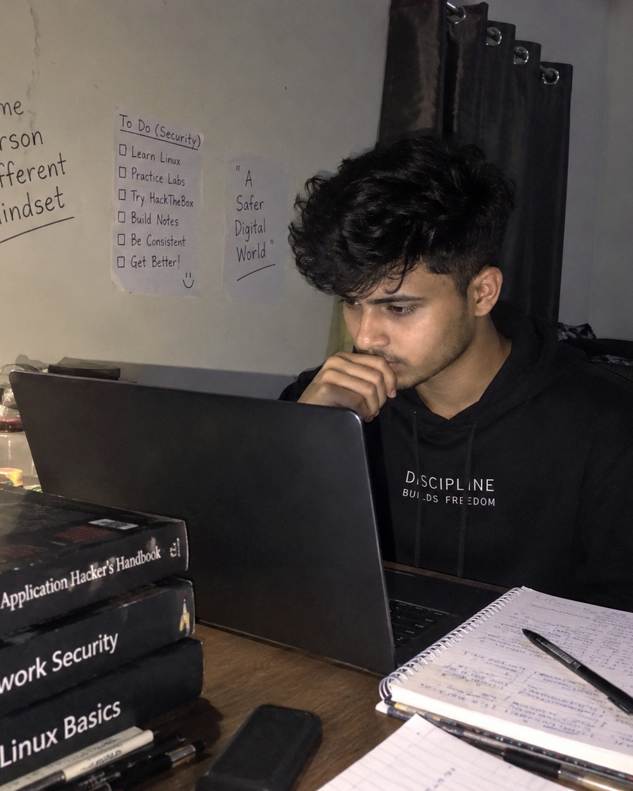

27.5°N 83.3°E
I wasn’t
always
this person.
I teach cybersecurity to 91,700 people. Most of them arrive with the same four words.
“Where do I start?”
This is what people see now.
- 91,700subscribers
- 1Mviews on one video
- 1,885learners enrolled
- 187course reviews written
- 4hrslongest free course on the channel
- 1person, at the start — me
None of it is the story. It’s what the story left behind.
But that isn’t
where I started.
27.5°N 83.3°E
Lumbini Province
Nepal
Nothing here suggested I would end up teaching cybersecurity. Nothing here suggested anybody would need me to.
Written on my channel
“Mujhe yaad hai jab main cybersecurity seekh raha tha, har din ek naya challenge hota tha. Online threats aur frauds ko samajhna mushkil tha aur koi guide nahi tha.”
“I remember when I was learning cybersecurity, every day was a new challenge. Understanding online threats and frauds was hard, and there was no guide.”
From the Cyber Guard channel description
Four words carry all of it. Koi guide nahi tha.

The problem
Everything was available.
None of it was in order.
Every answer already existed somewhere online. That was the problem, not the solution. Twenty‑three things to learn, no sequence, and nothing telling me which one came first.
Twenty-three, in no order at all
This is what it looked like to me.
The part nobody watches
A year of this.
Not a montage. Attrition. The same problem, forty times — until the fortieth time it worked and I still couldn’t fully explain why.
The year people thought I was wasting turned out to be the most valuable investment of my life.
Anil Yadav
The move
The line finally
went somewhere.
I left for Bhubaneswar, to study at KIIT — roughly 700 km east. The first place where the thing I’d been teaching myself alone had other people in the room.
Lumbini
27.5°N 83.3°E
Bhubaneswar
20.3°N 85.8°E
The turn
- I was trying to figure it out.
- Then I started writing it down.
- Then I started explaining it.
- Then people started listening.
“Tab maine socha agar main apni safety ke liye struggle kar raha hoon, toh dusron ki help karni chahiye.”
“Then I thought — if I’m struggling for my own safety, I should help other people too.”
From the Cyber Guard channel description
Learner Teacher
The work
Then people
started listening.
Four years of it, free, in Hindi. My most-watched videos aren’t the dramatic ones. They’re the ones that answer the first question a beginner actually has — which thing do I install, and how.
Seven of my most-watched. The rest of the channel →
What that adds up to
One person who couldn’t find a guide became one — for a community I have never met.
How I think
The order I wish
somebody had given me.
19 in the order I found them. 4 I reached later — not first. Working out which was which took me years.
- 01 What it is
- 02 Why it works
- 03 The tool
- 04 You try it
- 05 You understand it
Same twenty-three things. In an order that holds.
Why any of it matters
Most people are not attacked.
They are asked.
- 01A message arrives.It looks like something you were already expecting.
- 02You click.Nothing appears to go wrong. That is the design.
- 03You sign in.The page looks right. It is not the page.
- 04Somebody else is in.Your password now belongs to two people.
- 05Then, nothing.For weeks. The gap between step four and the day you find out is where the damage happens.
None of that needs technical skill to fall for. That is exactly why I explain it in plain Hindi instead of jargon — “taaki koi apni savings ya personal data na kho de.”
I never forgot what it felt like
not to know where to start.
The internet gave me information.
What I needed was direction.
That’s the part I try to give.
To the student. “Where do I start?”
To everybody else. “How do I stay safe?”
“Where do I start?”
People ask me that now.